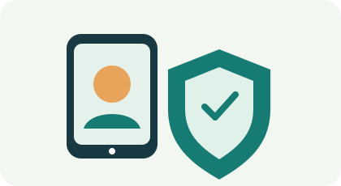

讓資料分享更安心
- 社群貼文避免公開住址、行程、證件與可辨識身分的細節。
- 安裝 App 前確認開發者、評價與要求的權限是否合理。
- 定期檢查社群、瀏覽器和手機的隱私及定位設定。
- 使用公共 Wi-Fi 時避免處理敏感帳務；確認網站使用 HTTPS。
分享前想一想
這項資訊真的需要公開嗎？誰能看到？之後能不能刪除？
這項資訊真的需要公開嗎？誰能看到？之後能不能刪除？
延伸資料：國家通訊傳播委員會（NCC） ↗
03 / PRIVACY BY DESIGN
個人資料一旦公開或外洩，可能被用於冒名、詐騙或追蹤。了解自己分享了什麼，並定期檢查隱私設定。

延伸資料：國家通訊傳播委員會（NCC） ↗